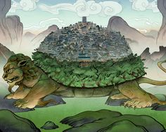

By Henry Moire
Here is a list of all the projects I have done:
Languages used: HTML, CSS
My name is Henry Moire. I have had a passion for computers since I was young and spent most of my time playing games on the family desktop. As I grew older and my love of computers only grew, I decided to do dedicate my career to computers and their improvement as a computer Engineer.
The journey towards being a chartered computer engineer started in high school with the subject Computer Studies which served as the foundation of my computer science knowledge. I spent the first year after high school doing a Foundation Year course to teach me the basics of engineering. Finally, I joined Moringa School to do a course in Software Development ahead of university to ensure I have a strong foundation in coding.